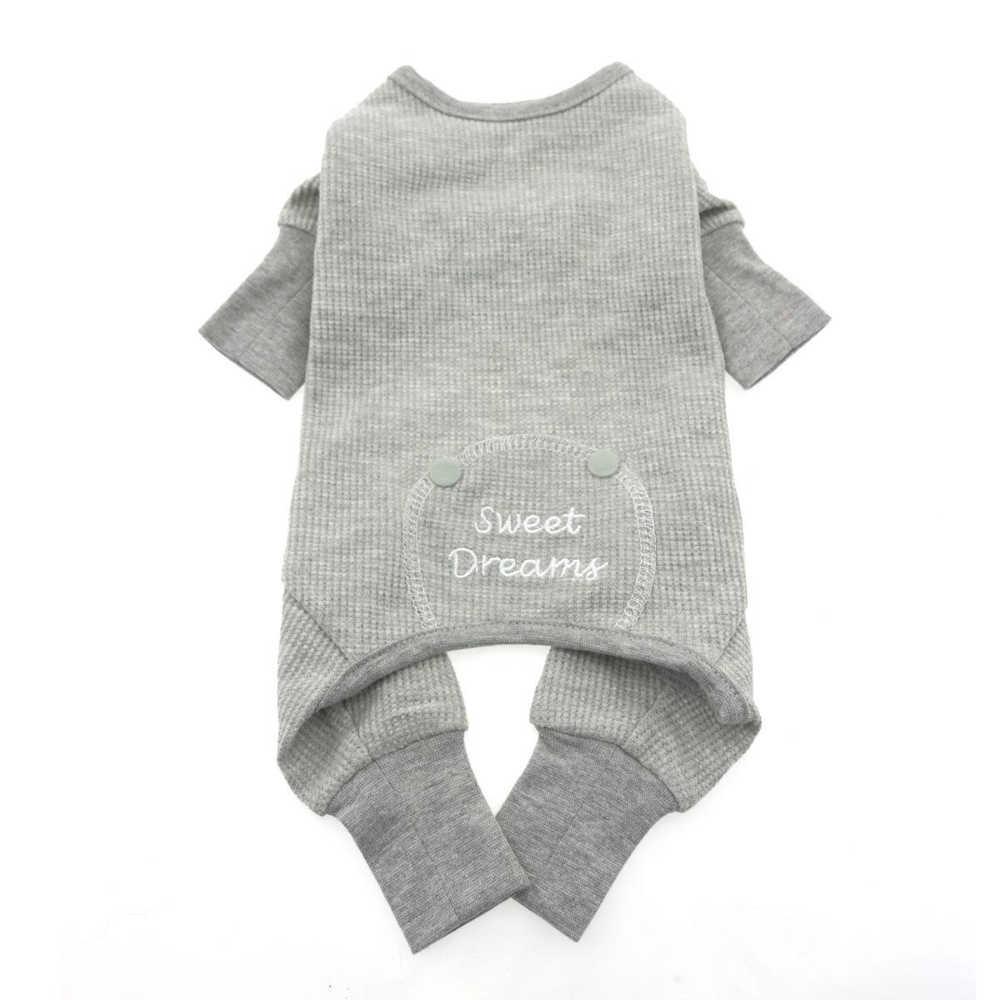

Thermal Dog Pajamas in gray

We had many requests to add some new colors to our very popular PJ line and especially some new boy colors. The alloy gray PJ features 100% Cotton thermal material that is made with interlock stitching. The body is very soft and has great stretch and return memory built in.
Machine wash, line dry.
| Size | Chest Girth | Neck | Weight (pounds) |
|---|---|---|---|
| X-Small | 12.5 in-16 in | 4.75 in-8.5 in | 3-5 |
| Small | 14.5 in-19 in | 5.5 in-9.5 in | 6-10 |
| Medium | 18.5 in-24 in | 6 in-10 in | 11-15 |
| Large | 23.5 in-32 in | 8.25 in-14.5 in | 16-25 |